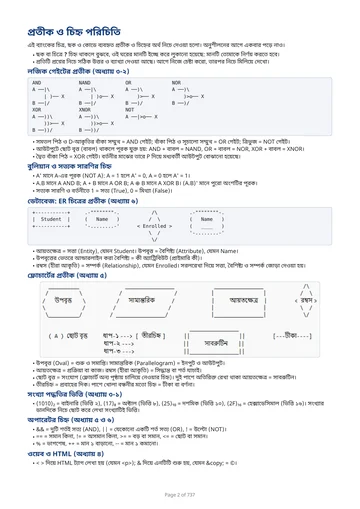

NCTB HSC ICT
Chapter-wise and whole book tests from a bank of 1816 questions, plus 905 real board-exam questions from 45 past papers.
Start practising →HSC ICT Notes Bank
Chapter-wise and whole book tests from a bank of 2594 questions built from the detailed chapter notes, with diagrams, tables and code questions.
Start practising →Cambridge O Level CS
Chapter-wise and whole book MCQ tests from a bank of 2000 questions covering all ten chapters.
Start practising →Cambridge O Level CS
25 questions. 20 minutes. Pick how you want to be tested.

View symbol guide: gates and diagrams →Chapterwise test
Pick one chapter. All 25 questions come from that chapter.
Choose chapter →Choose a chapter
Whole book test
25 questions drawn from all chapters, mixed together.
Start test →Board papers
Sit a real past paper from Dhaka, Rajshahi and 7 other boards. 45 papers, 905 questions, timed at 20 minutes for 25 questions.
Choose a paper →Choose a board paper
Please read before you start
Once you select an answer, you cannot change it. So please think carefully before choosing your answer.
Switching tabs is prohibited. After 3 tab switches, your test will be submitted automatically. Your timer keeps running while you are away. If you refresh the page, your test resumes where you left off, with the same answers and the same timer.
Figures in this bank are text diagrams, not pictures: gates by shape, ER diagrams by boxes, ovals and diamonds, flowcharts by ovals, parallelograms, rectangles and diamonds. A ? in a figure or table was hidden on purpose, so work that cell out. See the PDF first page, প্রতীক ও চিহ্ন পরিচিতি, if a diagram looks unfamiliar.
End this test?
If you end now, your answers will not be saved and you will not get a result. You will go back to the test choices.
You left the test tab
You left the test tab.
Review your wrong answers
Symbol guide: gates and diagrams
Page 2 of the Notes Bank PDF: প্রতীক ও চিহ্ন পরিচিতি. The full-size image loads only when this popup is opened.